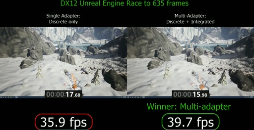
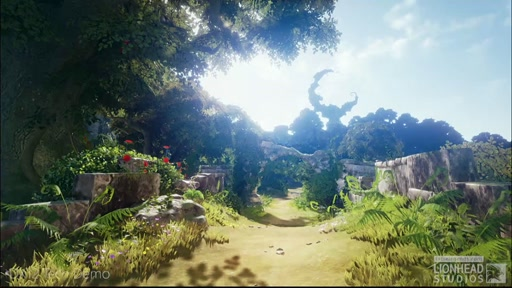
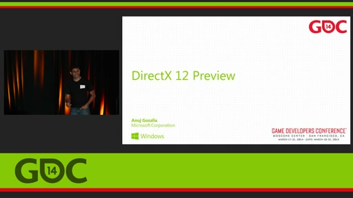

Welcome to the DirectX Channel 9 Blog. For the latest news and information on DirectX, visit our MSDN blog and follow us on Twitter @DirectX12.
DirectX 12: Multiadapter Unreal Engine 4[MP4] [0:00:44] [2015/05/01]We implemented an experimental technique called heterogeneous multiadapter using Epic Games' DX12 Unreal Engine 4. This technique allows us to split the rendering workload across an integrated Intel…
DirectX: DX12 Techdemo for Maxwell launch[MP4] [0:01:30] [2014/09/19]At E3 this year, Microsoft showed off "Fable Legends" for Xbox One, a new take on the RPG franchise's well-loved world of magic, humor and high adventure. Fable Legends' stunning visuals…
DirectX: Evolving Microsoft's Graphics Platform[MP4] [0:46:42] [2014/04/16]For nearly 20 years, DirectX has been the platform used by game developers to create the fastest, most visually impressive games on the planet. However, you asked us to do more. You asked us to bring…